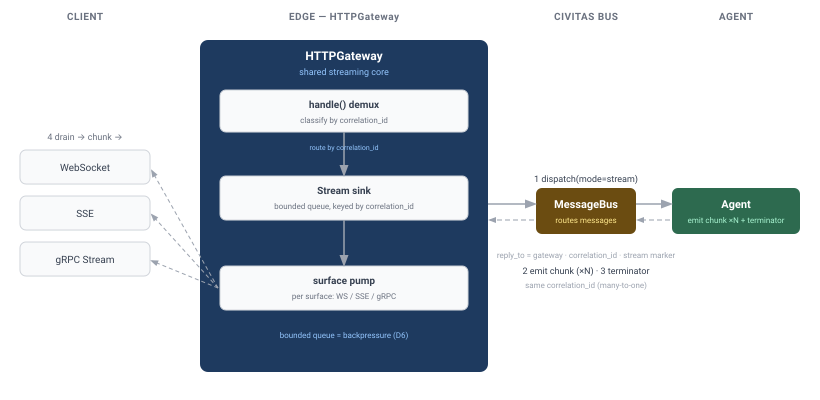
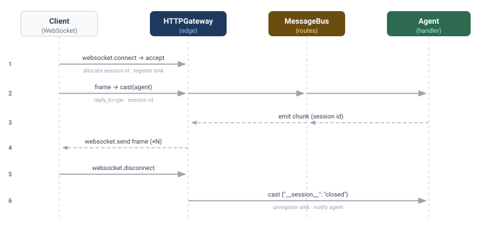
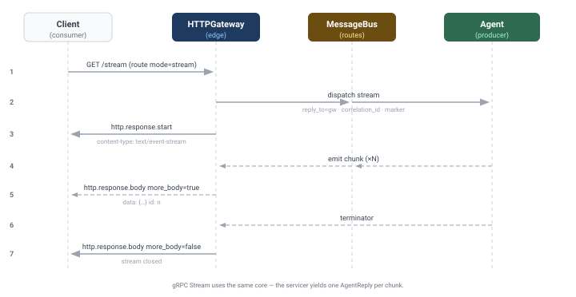

Design: Gateway Streaming — WebSocket (G2) + SSE / true streaming (G3)¶
Status: DRAFT — for review (2026-07-04)
Author: Sisyphus
Covers: v0.6.0 milestones G2 (WebSocket upgrade) and G3 (SSE / true streaming responses),
and completes the gRPC Stream RPC that G1 deferred.
Guiding principle: G2 and G3 are not two independent features — they are three client-facing shapes (WebSocket frames, SSE events, gRPC server-stream) over one shared streaming core. The G1 design already called this out ("build all three streaming surfaces together on one streaming core"). This doc designs that core first, then the three surfaces on top of it. Same gateway ethos as G1: the agent never sees the wire; the gateway owns every protocol concept.
This doc supersedes the streaming sketches in http-gateway.md Phase 4 and answers
gateway-api-surface.md Q4 (streaming was deferred with the
{"chunks": [...]} buffer-and-serialise workaround; G3 replaces it with real streaming).
Motivation¶
Three gaps remain in the gateway after G1:
- No streaming responses. A route can only
call(one reply) orcast(no reply). An agent that produces output incrementally (token-by-token LLM output, progress events, tailing logs) must buffer everything into one{"chunks": [...]}reply — high latency, no progress, unbounded memory. - No WebSocket.
GatewayASGI.__call__handles onlyhttpandlifespanscopes; awebsocketupgrade is silently dropped. There is no way to hold a long-lived bidirectional session to an agent. - gRPC
Streamis a stub. G1 shippedStreamin the.protobut the servicer returnsUNIMPLEMENTED— deliberately deferred here.
All three need the same thing: a way for an agent to emit a sequence of messages to a single client connection, and for the gateway to forward that sequence over the wire until it ends.
Reconciliation with the shipped runtime (what exists in v0.5 / G1)¶
Grounding the design in current facts (confirmed by reading the code):
- The bus has no streaming primitive.
AgentProcessexposessend(fire-and-forget),ask(single request→single reply), andbroadcast(fire-and-forget fan-out). There is nostream, no pub/sub, no topic subscription.Transport.subscribe/publishexist but are internal wiring. - Request-reply correlation is fully built and proven.
ask()stamps acorrelation_id; the transport allocates an ephemeralreply_to = "_reply.{uuid}"backed by a one-slot queue; the handler'sself.reply(payload)echoescorrelation_idand targetsreply_to. The streaming core generalises exactly this pattern from one reply to many. HTTPGatewayis itself a registeredAgentProcesswhosehandle()is currently a no-op (pass). Agents can alreadysend()to it by name. This is the hook the streaming core uses to receive chunks back.GatewayDispatcher(D3 from G1) is the shared translate-and-route core for HTTP and gRPC, withdispatch(mode="call"|"cast"). Streaming adds a third mode.- ASGI response path is single-shot.
_respond()sends onehttp.response.start+ onehttp.response.body(nomore_body=True). SSE needs an incremental variant. - WebSocket wire protocol is already available —
uvicorn[standard]bundleswebsockets. The ASGI server handles the handshake/framing; we only need to handle thewebsocketscope in our app. No new dependency for G2.
Architecture — the shared streaming core¶

The core generalises request-reply into request-stream:
- The gateway opens a stream sink: a bounded
asyncio.Queueregistered under a freshcorrelation_idin a per-gatewaydict[str, StreamSink]. - It dispatches the request to the agent as a normal bus message with
reply_to = <gateway name>, thecorrelation_id, and a marker (message_type = "*.stream") telling the agent a stream is expected. - The agent emits chunks back to the gateway over the bus (one message per chunk, same
correlation_id), then a terminator. Because chunks are addressed to the gateway's own name, they land in the gateway's mailbox and flow throughhandle(). HTTPGateway.handle()(no longer a no-op) demultiplexes bycorrelation_idand enqueues each chunk onto the matching sink; the terminator closes the sink.- The gateway surface (WebSocket / SSE / gRPC) consumes the sink as an
AsyncIterator[dict]and writes each chunk to the wire. When the iterator ends (terminator, timeout, or client disconnect), the sink is unregistered.
This is deliberately the same ephemeral-address + correlation_id mechanism that ask() already
uses — just many-to-one instead of one-to-one, and demultiplexed in handle() instead of a
transport reply queue.
D1 — Streaming core mechanism (the pivotal decision)¶
| Option | What it is | Cost / risk | Verdict |
|---|---|---|---|
| A. Gateway-mediated correlation_id multiplexing | Stream sinks live in the gateway; agent emits chunks back to the gateway by name; handle() demuxes by correlation_id. One small additive AgentProcess helper (emit/end_stream). No transport/bus change. |
Backpressure is coarse (bounded queue + overflow policy, see D6); streaming is a gateway-scoped capability, not a general agent-to-agent one. | ✅ Recommended |
| B. First-class bus streaming | Add Transport.stream() across in-process/ZMQ/NATS + AgentProcess.stream() returning AsyncIterator[Message]. Agents everywhere can stream. |
Large surface across all transports; ZMQ/NATS multi-reply semantics are genuinely hard; destabilises the core for a gateway feature. A milestone of its own. | Rejected for v0.6.0 (revisit if agent-to-agent streaming becomes a first-class need) |
| C. Ephemeral sink agents | Register a throwaway receiver agent per stream in the registry; agent streams to it. | Requires dynamic registration of non-agent receivers + registry churn per request; more moving parts than A for no real gain. | Rejected |
Recommendation: Option A. It ships G2+G3 surgically, reuses the proven correlation_id/reply_to pattern, adds no dependency and no transport-protocol change, and keeps streaming a gateway concern (consistent with "all HTTP/protocol concerns live at the gateway boundary"). Option B is a legitimate future ("bus-native streaming") but is out of proportion to a gateway-completion milestone.
D2 — Agent-side streaming API¶
The agent needs a minimal, ergonomic way to emit a stream. Two shapes:
# Option D2-a — explicit helpers (mirrors self.reply)
async def handle(self, message: Message) -> None:
async for token in self.llm.stream(...):
await self.emit(message, {"token": token}) # one chunk
await self.end_stream(message) # terminator
# Option D2-b — async context manager (auto-terminates, exception-safe)
async def handle(self, message: Message) -> None:
async with self.stream_reply(message) as stream:
async for token in self.llm.stream(...):
await stream.send({"token": token})
# terminator (and error terminator on exception) sent automatically
Recommendation: D2-b (context manager) as the primary API, with emit/end_stream as the
low-level primitives it's built on. The context manager guarantees the terminator is always sent
(including on exception → an error terminator the client can see), which is the #1 correctness
footgun of manual streaming. Both are tiny, additive, and mirror the existing self.reply()
construction (recipient = reply_to, echo correlation_id). This is the only change outside the
gateway package, and it is purely additive to the public SDK.
emit/end_stream/stream_reply build a Message exactly like reply() does, but stamp a control
field (payload["__stream__"] = "chunk" | "end" | "error") so handle() can classify without
guessing. _agency.*-reserved typing is respected (we use a payload marker, not a reserved type).
G2 — WebSocket upgrade¶

A WebSocket is a long-lived, bidirectional session bound to one agent. Per the roadmap, inbound
frames map to cast() and the agent streams messages back over the same socket.
Flow:
1. GatewayASGI.__call__ gains elif scope["type"] == "websocket": await self._handle_websocket(...).
2. On websocket.connect, the gateway matches the path to a ws route (below), accepts the
socket, allocates a session id (a long-lived correlation_id), and registers a session sink.
3. Client → agent: each websocket.receive frame (JSON) is dispatched mode="cast" to the route's
agent, carrying reply_to = <gateway>, the session id, and the parsed payload. The agent handles it
like any cast.
4. Agent → client: the agent emits chunks (via emit/stream_reply) tagged with the session id;
handle() routes them to the session sink; a background pump task per socket drains the sink and
websocket.sends each as a text frame.
5. On websocket.disconnect (or agent error terminator), the pump stops, the sink is unregistered, and
the agent is notified with a cast ({"__session__": "closed"}) so it can release per-session
state.
Config — ws routes (topology YAML, mirrors HTTP routes):
Scope for G2: WebSocket over HTTP/1.1 + HTTP/2 via uvicorn (the common case). WebSocket-over-HTTP/3 (the WebTransport/aioquic path) is out of scope — noted as future. SSE (G3) already covers the HTTP/3 streaming case since it is plain chunked HTTP.
G3 — SSE / true streaming (and gRPC Stream)¶

G3 turns the streaming core into outbound-only streams on the request/response surfaces.
SSE (Server-Sent Events) over HTTP¶
- A route declares
mode: "stream". The terminal dispatch uses the streaming core (notcall). - A new
_respond_stream()sendshttp.response.startwithcontent-type: text/event-streamand nocontent-length, then, per chunk,http.response.bodywithmore_body=True, formatting each as an SSE event: The terminator sends a finalhttp.response.bodywithmore_body=False. Errors emit anevent: errorframe before closing. - This replaces the
{"chunks": [...]}workaround (Q4): the agent emits chunks incrementally instead of buffering them into one reply. - Works across HTTP/1.1, HTTP/2, and HTTP/3 (it is ordinary chunked HTTP).
gRPC server-streaming (Stream)¶
- The G1
Streamstub is completed:_AgentServicer.Streamcalls the streaming core andyields oneAgentReply(payload=Struct)per chunk, ending when the core iterator ends. Error terminators map to the same D6 gRPC codes as G1 (transport failures → status codes; agent error terminator → anAgentReply.errorbefore the stream closes, consistent with G1's in-band decision).
D5 — SSE reconnection¶
Emit a monotonically increasing id: per event. On reconnect, the browser sends Last-Event-ID.
Recommendation: best-effort for v0.6.0 — the gateway forwards Last-Event-ID to the agent in the
initial payload; replay of missed events is the agent's responsibility (the gateway keeps no per-
stream history). Durable replay is a non-goal (would require gateway-side buffering / a store).
Config additions (GatewayConfig)¶
ws_routes: list[dict[str, Any]] = field(default_factory=list) # WebSocket routes (G2)
stream_queue_maxsize: int = 256 # per-stream sink bound (backpressure, D6)
stream_idle_timeout: float = 300.0 # close a stream with no chunk for this long
max_stream_duration: float = 3600.0 # hard cap on a single stream/session
HTTP SSE routes reuse the existing routes: block with mode: "stream" — no new route config needed
for SSE, only for WebSocket.
D6 — Backpressure & lifecycle¶
- Each sink is a bounded
asyncio.Queue(maxsize=stream_queue_maxsize).handle()enqueues withput_nowait; on overflow the stream is closed with aslow_consumererror terminator rather than blocking the gateway message loop (blockinghandle()would stall all streams). Rationale: in Option A the bus is fire-and-forget, so we cannot push backpressure to the agent; failing fast on a slow client is the honest behaviour. Configurable queue size lets deployments tune the tolerance. - Timeouts:
stream_idle_timeout(no chunk) andmax_stream_duration(total) both close the sink and, for WS, the socket. Prevents zombie streams from leaking sinks/sockets. - Client disconnect (SSE connection dropped / WS closed): the surface cancels its pump, unregisters the sink, and casts a close notice to the agent so it can stop producing.
- Gateway shutdown (
on_stop): all sinks are closed, pumps cancelled, sockets closed with a going-away code.
Testing plan¶
- Streaming core (unit): sink register/enqueue/terminate/overflow/timeout;
handle()demux by correlation_id;emit/end_stream/stream_replymessage shape (recipient/correlation/marker); context-manager terminator-on-exception. - G2 (unit + integration): drive
GatewayASGIwith a syntheticwebsocketscope (connect/receive/send/disconnect); frame→cast; agent-emitted chunk→frame; disconnect→agent notice; idle/duration timeout. - G3 SSE (unit + integration):
mode: "stream"route →text/event-stream,more_bodychunk sequence,data:/id:framing, error frame, replaces{"chunks"}; real HTTP client reads the event stream. - gRPC
Stream(integration): realgrpc.aiochannel,AgentStub.Streamyields N replies then completes; agent error terminator surfaces on the last reply. - Coverage ≥ 85% gate held; generated proto stays omitted.
Decisions summary (need sign-off)¶
| # | Decision | Recommendation |
|---|---|---|
| D1 | Streaming core mechanism | A — gateway-mediated correlation_id multiplexing (no transport change) |
| D2 | Agent-side streaming API | async with self.stream_reply(msg) primary; emit/end_stream low-level |
| D3 | WebSocket wire library | Reuse uvicorn[standard]'s websockets — no new dependency |
| D4 | WS client→agent semantics | Each frame → cast() (per roadmap); agent streams back on the same socket |
| D5 | SSE reconnection | Best-effort (id: + forward Last-Event-ID); durable replay is a non-goal |
| D6 | Backpressure | Bounded sink; close with slow_consumer on overflow; idle + duration timeouts |
| D7 | Doc/route config | SSE via existing routes: mode: "stream"; WebSocket via new ws_routes: |
Non-goals (v0.6.0)¶
- Bus-native agent-to-agent streaming (Option B) — separate future initiative.
- Durable SSE replay / event history (agent's responsibility if needed).
- WebSocket over HTTP/3 / WebTransport (uvicorn HTTP/1.1+2 path only for G2).
- gRPC client-streaming and bidirectional streaming (server-streaming only; matches G1 non-goals).
- Per-message auth handshakes beyond the existing middleware chain (auth middleware is G5).
Implementation checklist (on approval)¶
Order minimises risk — the shared core lands first with its own tests, then each surface:
- Streaming core:
AgentProcess.emit/end_stream/stream_reply(additive);StreamSink+ registry onHTTPGateway; wireHTTPGateway.handle()to demux;GatewayDispatcher.stream()/mode="stream"returningAsyncIterator[dict]. Unit tests. - G3 SSE:
_respond_stream()inasgi.py;mode: "stream"route handling; error/id:framing. Unit + integration tests. - G3 gRPC
Stream: complete_AgentServicer.Streamon the core. Integration test. - G2 WebSocket:
_handle_websocket()+websocketscope branch;ws_routesconfig; per-socket pump + session sink; disconnect/timeout handling. Unit + integration tests. - Config + docs:
GatewayConfigfields; topology validate/show forws_routes; CHANGELOG; flip milestones G2/G3 to done; update the (now-stale-again)http-gateway-arch.svgnote if needed. - Full gate (ruff + mypy + pytest + coverage), strip
uv.lockartifact, commit.